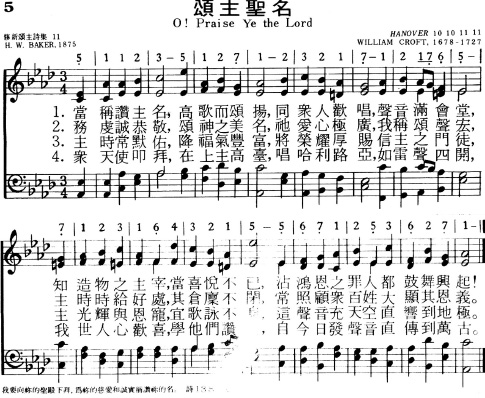
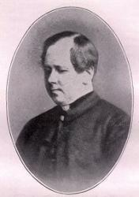
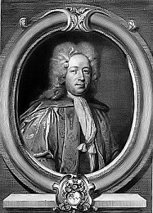
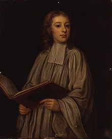

|
|
|
|
1 O praise ye the Lord! Praise him in the height;
2 O praise ye the Lord! Praise him upon earth,
3 O praise ye the Lord, all things that give sound;
4 O praise ye the Lord! Thanksgiving and song |
005颂主圣名
1.当称赞主名，高歌而颂扬，
同众人欢唱，声音满会堂， 和造物之主宰，当喜悦不已， 沾鸿恩之罪人都鼓舞兴起！ 2.务虔诚恭敬，颂神之美名， 祂爱心极广，我称颂声宏， 主时时给好处，其仓廪不闭， 常照顾众百姓大显其恩义。 3.主时常默佑，降福气丰富， 将荣耀厚赐，信主之门徒， 主光辉与恩宠，宜歌咏不息， 这声音充天空直响到地极。 4.众天使叩拜，在上主高台， 唱哈利路亚，如雷声四开， 我世人心欢喜，学他们赞主， 自今日发声音直传到万古。 |
|
https://www.mred365.cn/szxg/7008.html
 |
|
|
|
|

https://www.youtube.com/watch?v=7p3fkKsLtfs&t=4s -
生命聖詩33 | 來敬拜榮耀王 | O Worship the King | HANOVER | CROFT https://www.youtube.com/watch?v=HSTpPoLHoes
| Text: | O praise ye the Lord! Praise him in the height |
| Author: | Henry Williams Baker (1821-1877) |
| Tune: | LAUDATE DOMINUM (PARRY) |
| Composer: | Charles Hubert Hastings Parry (1848-1918) |
| Short Name: | H. W. Baker |
| Full Name: | Baker, H. W. (Henry Williams), 1821-1877 |
| Birth Year: | 1821 |
| Death Year: | 1877 |
Baker, Sir Henry Williams,

Bart., eldest son of Admiral Sir Henry Loraine Baker, born in London, May 27, 1821, and educated at Trinity College, Cambridge, where he graduated, B.A. 1844, M.A. 1847. Taking Holy Orders in 1844, he became, in 1851, Vicar of Monkland, Herefordshire. This benefice he held to his death, on Monday, Feb. 12, 1877. He succeeded to the Baronetcy in 1851. Sir Henry's name is intimately associated with hymnody. One of his earliest compositions was the very beautiful hymn, "Oh! what if we are Christ's," which he contributed to Murray's Hymnal for the Use of the English Church, 1852. His hymns, including metrical litanies and translations, number in the revised edition of Hymns Ancient & Modern, 33 in all. These were contributed at various times to Murray's Hymnal, Hymns Ancient & Modern and the London Mission Hymn Book, 1876-7. The last contains his three latest hymns. These are not included in Hymns Ancient & Modern. Of his hymns four only are in the highest strains of jubilation, another four are bright and cheerful, and the remainder are very tender, but exceedingly plaintive, sometimes even to sadness. Even those which at first seem bright and cheerful have an undertone of plaintiveness, and leave a dreamy sadness upon the spirit of the singer. Poetical figures, far-fetched illustrations, and difficult compound words, he entirely eschewed. In his simplicity of language, smoothness of rhythm, and earnestness of utterance, he reminds one forcibly of the saintly Lyte. In common with Lyte also, if a subject presented itself to his mind with striking contrasts of lights and shadows, he almost invariably sought shelter in the shadows. The last audible words which lingered on his dying lips were the third stanza of his exquisite rendering of the 23rd Psalm, "The King of Love, my Shepherd is:"—
Perverse and foolish, oft I strayed,
But yet in love He sought me,
And on His Shoulder gently laid,
And home, rejoicing, brought me."
This tender sadness,
brightened by a soft calm peace, was an epitome of his poetical life.
Sir Henry's labours as the Editor of Hymns Ancient & Modern were
very arduous. The trial copy was distributed amongst a few friends in 1859;
first ed. published 1861, and the Appendix, in 1868;
the trial copy of the revised ed. was issued in 1874, and the publication
followed in 1875. In addition he edited Hymns for the
London Mission, 1874, and Hymns for Mission Services,
n.d., c. 1876-7. He also published Daily Prayers for those
who work hard; a Daily Text Book, &c. In Hymns Ancient
& Modern there are also four tunes (33, 211, 254, 472) the
melodies of which are by Sir Henry, and the harmonies by Dr. Monk. He died
Feb. 12, 1877.
--John Julian, Dictionary of Hymnology (1907)
Notes
Scripture References:
st. 1 = Ps. 148:1-6
st. 2 = Ps. 148:11-14
st. 3 = Ps. 150:3-6
Originally "O Praise Ye the Lord," this text is considered to be one of finest written by Henry W. Baker (PHH 342). It was published in the 1875 edition of Hymns Ancient and Modern (Baker was editor of both the 1861 and 1875 editions).
The entire text is an amplification in hymn form of the "alleluia" phrases that frame Psalm 148 and 150. While stanzas 1-3 are based on various verses in those psalms, stanza 4 is a summary: "For love in creation, for heaven restored, for grace of salvation, sing praise to the Lord!"
Liturgical Use:
Any occasion of praise when Psalm 148 or 150 could also be used; a
glorious (although long) doxology for harvest thanksgiving; a choral
festival or similar praise service.
--Psalter Hymnal Handbook, 1987
Tune Information
| Title: | HANOVER (Croft) |
| Composer: | William Croft (1708) |
| Meter: | 10.10.11.11 |
| Incipit: | 51123 51271 23217 |
| Key: | A Major |
| Copyright: | Public Domain |
| Short Name: | William Croft |
| Full Name: | Croft, William, 1678-1727 |
| Birth Year: | 1678 |
| Death Year: | 1727 |
William Croft,

Mus. Doc. was born in the year 1677 and received his musical education in the Chapel Royal, under Dr. Blow. In 1700 he was admitted a Gentleman Extraordinary of the Chapel Boyd; and in 1707, upon the decease of Jeremiah Clarke, he was appointed joint organist with his mentor, Dr. Blow. In 1709 he was elected organist of Westminster Abbey. This amiable man and excellent musician died in 1727, in the fiftieth year of his age. A very large number of Dr. Croft's compositions remain still in manuscript.
Cathedral chants of the XVI, XVII & XVIII centuries, ed. by Edward F. Rimbault, London: D. Almaine & Co., 1844
Henry Baker, Some Hymns and Hymn Writers (1907).
The volume entitled Hymns, Ancient and Modern, for Use in the Services of the Church, has had an unprecedented popularity. No other compilation can compare with it in the rapidity and extent of its circulation. It appeared in 1861 with 273 hymns, and in 1868 with an appendix containing 113 additional hymns. Fourteen supplementary hymns have since been added, making the whole number 400. It has been published in a great variety of forms and sizes, with and without tunes, both in England and America. It is claimed that nearly five million copies have been sold. Of this hymnal the REV. SIR HENRY WILLIAMS BAKER, Baronet, was one of the editors-in-chief.
He was the son of Rear Admiral Sir Henry Lorraine Baker, whose father, Sir Robert Baker, the youngest son of John Baker, M.D., of Richmond, Surrey, was created by George III, April 30, 1796, a baronet. The family seat is Upper Dunstable House, Richmond, on the Surrey side of the Thames. Sir Henry was the third baronet, and was born at London May 27, 1821. His mother was a daughter of William Williams, Esq., from whom he derived his second name. He was educated at Trinity College, Cambridge, and took his degree of B.A. in 1844. Having been designed for the Church, he was the same year ordained deacon, and December 20, 1846, he was ordained priest by the Bishop of Rochester at Westminster. He was preferred in 1851 to the vicarage of Monkland, succeeded to the baronetcy in 1859, and died February 12, 1877.
Sir Henry distinguished himself principally in the line of hymnology. Some of his hymns were written as early as 1852. To Hymns, Ancient and Modern he contributed twelve original hymns and at least ten translations. He developed not only peculiar facility in versification, but remarkable skill in adapting his compilation to the prevailing tastes of the Church of England. His advanced churchmanship is everywhere apparent, especially in his hymn on Baptism: “’Tis done, that new and heavenly birth / Which re-creates the sons of earth, / And cleanses from the guilt of sin / The souls whom Jesus died to win.”
Of his translations, four are of permanent value: “On this day, the first of days,” etc., is a translation of “Die parente temporum,” etc., from the LeMans Breviary. “Blessed Trinity! from mortal sight,” etc., is a successful version of “O luce, quae tua lates,” etc., a hymn in the Paris Breviary, credited to Santolius Maglorianus. Another Latin hymn by the same author, “Prome vocem, mens canoram,” etc., was versified by Chandler and reconstructed by Sir Henry in the form now so extensively in use, “Now, my soul! thy voice upraising,” etc. “Jesus! grant me this, I pray,” etc., is a version of a Latin hymn of four stanzas, “Dignare me, O Jesu! rogo te,” etc., taken from one of the later French missals, and of uncertain origin. Among the earliest of his poetical essays is the hymn, “Oh! what, if we are Christ’s,” etc. It was written in 1852, and celebrates the faith of the martyrs. “Oh, praise our God today,” etc., “There is a blessed home,” etc., were written in 1852. Sir Henry was also the author of Daily Prayers, for the Use of Those Who Have to Work Hard, a Daily Text-Book, also for hard workers, and a few short tracts.
by EDWIN HATFIELD
The Poets of the Church
(1884)
Featured Hymns:
Author:
The King of love my shepherd is
Translator:
O sacred head, surrounded
Alterer:
Let us with a gladsome mind
O come, all ye faithful
O come, O come, Emmanuel
Of the Father’s love begotten
Collections of Hymns:
Hymns Ancient & Modern
Trial/Draft (1859):
PDF
1st Edition (1861):
Archive.org
Annotated by Louis Biggs (1867):
Archive.org
with Appendix (1868):
SBTS
Revised & Enlarged (1875):
Google Books
with Supplement (“Complete Ed.”) (1889):
Archive.org
Historical Companion (1889):
PDF
| 2nd ed. (1903):
Archive.org
Hymns for the London Mission (1874)
Hymns for Mission Services (1876–77)
The Psalter and Canticles (1884)
see also:
Hymnal for Use of the English Church (London, 1852)
Related Resources:
Josiah Miller, “Sir Henry Williams Baker, Bart.,” Singers and Songs of the Church (London: Longmans, Green & Co., 1869): 558–559: Archive.org
“The Late Rev. Sir Henry Baker,” Pall Mall Gazette (London: 13 Feb. 1877): PDF
“Death of the Rev. Sir H.W. Baker, Bart.,” Morning Post (London: 14 Feb. 1877): PDF
Edwin Hatfield, “Sir Henry Williams Baker, Bart.,” The Poets of the Church (NY, A.D.F. Randolph & Co., 1884), pp. 31–33: Archive.org
John Julian, “Sir Henry Williams Baker, Bart.,” A Dictionary of Hymnology (London: J. Murray, 1892), p. 107: HathiTrust
Erik Routley, “Some correspondence between the Reverend Sir Henry Baker and the Reverend Dr. John Bacchus Dykes, 1874,” HSGBI Bulletin, vol. 6, no. 1 (April 1965), pp. 1–12: Website
Bernard Braley, “Henry Baker,” Hymnwriters 2 (London: Stainer & Bell, 1989), pp. 120–146.
Susan Drain, “Sir Henry Williams Baker,” Oxford Dictionary of National Biography (2004): DOI
Janet Butler, et al., Hymns Ancient & Modern and Henry Williams Baker: A Herefordshire Vicar and His Hymn Book (Leominster: Leominster History Study Group, 2013).
Marion Lars Hendrickson, “Henry W. Baker,” Lutheran Service Book Companion to the Hymns, vol. 2 (St. Louis: Concordia, 2019), pp. 199–200.
H.W. Baker, Hymnary.org: https://hymnary.org/person/Baker_HenryW
J.R. Watson, “Henry Williams Baker,” Canterbury Dictionary of Hymnology: http://www.hymnology.co.uk/h/henry-williams-baker
See also:
https://www.hymnologyarchive.com/henry-baker

Words: Henry Williams Baker (b. May 27, 1821; d. Feb.
12, 1877)
Music: Laudate Dominum (or, Parry)
by Charles Hubert Hastings Parry (b. Feb. 27, 1848; d. Oct. 7, 1918)
Links:
Wordwise Hymns
The Cyber
Hymnal
Note: This 1875 hymn by Henry Baker remains, in my view, one of the greatest hymns of praise in the English language. It is sad and most unfortunate that so few churches use it, or even know it. Hymn book after hymn book I checked doesn’t even include it. But the Anglican Church’s Book of Common Praise (1938) has it, as has the revision Common Praise (2000). Both use only the first four stanzas, but you can read all eight in the Cyber Hymnal.
In the latter book, the final stanza is printed with a spectacular running accompaniment for organ. This certainly provides for Baker’s call that: “Loud organs, His glory forth tell in deep tone” (CH-3). In the video clip currently used in the Wordwise Hymns link, ignore the funny hats on the ladies, and the people gazing around as though they weren’t sure what to do. Just listen to this powerful expression of praise, as sung by a large congregation.
I encourage you to print the song on a bulletin insert, and have your congregation learn it and use it. As the Cyber Hymnal indicates, it will work with the tune Hanover, commonly used with Charles Wesley’s Ye Servants of God, Your Master Proclaim. However, give Charles Perry’s magnificent Laudate Dominum a try. I know you will be blessed.
The hymn is inspired by, and makes allusions to, two psalms of praise, Psalms 148 and 150. Together, the passages provide a overwhelming cascade of praise and worship to conclude a book in which that is a prominent theme.
CH-1) O praise ye the Lord! praise Him in the height;
Rejoice in His Word, ye angels of light;
Ye heavens, adore Him by whom ye were made,
And worship before Him in brightness arrayed.
CH-2) O praise ye the Lord! Praise Him upon earth,
In tuneful accord, ye sons of new birth;
Praise Him who hath brought you His grace from above,
Praise Him who hath taught you to sing of His love.
In Psalm 148, we read, “Praise Him all His angels; praise Him all His hosts” (Ps. 148:2). And also: “Kings of the earth and all peoples; princes and all judges of the earth; both young men and maidens; old men and children. Let them praise the name of the LORD, for His name alone is exalted; His glory is above the earth and heaven” (Ps. 148:11-13).
This we can certainly understand. Both spirit beings and mortals have been given minds to relate to God, and know Him in measure, as well as the verbal abilities to exalt Him. In the Scriptures we are repeatedly summoned to do that. “Praise the LORD! Praise, O servants of the LORD, praise the name of the LORD!” (Ps. 113:1).
But Psalm 148 also mentions: the sun, moon, and stars (vs. 3), “waters above the heavens [skies],” representing the atmosphere in general (vs. 4), creatures in the sea (vs. 7), fire, hail, snow, clouds and wind (vs. 8), mountains, trees (vs. 9), “beasts and all cattle [i.e. wild animals and domestic animals], creeping things [such as insects and small animals] and flying fowl” (vs. 10).
So, how can animals or inanimate things praise God? How can a cow or a cat or a cloud praise God? There a couple of answers to that. First, all things reflect praise to God when they fulfil the purpose for which they were created. For example, when rain waters the earth, and causes things to grow–which in turn provides food for the animals (Ps. 147:7-9), that rain is reflecting praise to its Maker.
But there is another aspect of this. God has built into human beings a curiosity about His creation, and a desire to discover how it operates. When we explore the universe and see the wonderful handiwork of God (Ps. 19:1), things that He not only brought into being, but that He also continues to sustain and sovereignly control (Ps. 148:5-6; cf. Col. 1:16-17; Heb. 11:3), we ourselves are motivated to praise the Lord.
What an insult, then, when secular man denies God the glory due to His name, instead asserting that all things are merely the product of billions of years of evolutionary accidents.
“Since the creation of the world His invisible attributes are clearly seen, being understood by the things that are made, even His eternal power and Godhead, so that they are without excuse, because, although they knew God, they did not glorify Him as God, nor were thankful, but became futile in their thoughts, and their foolish hearts were darkened. Professing to be wise, they became fools” (Rom. 1:20-22).
The evidence is before all, but they “wilfully overlook and forget” what God has done (II Pet. 3:5, Amplified). How sad! Let us give God the glory for His marvelous works!
CH-4) O praise ye the Lord! Thanksgiving and song
To Him be outpoured all ages along!
For love in creation, for heaven restored,
For grace of salvation, O praise ye the Lord!
Questions:
1) Other than with words and with our songs, what is the best way for us
to praise the Lord?
2) What is the reason that some human beings refuse to acknowledge the creative power and wisdom of God that is seen all around in His handiwork?
Links:
Wordwise Hymns
The Cyber
Hymnal
https://wordwisehymns.com/2013/08/23/o-praise-ye-the-lord/
William Croft 1678 – 1727
|
William Croft
|
|
|---|---|
|

William Croft as a choirboy,
c. 1690.
|
|
| Born |
Ettington, Warwickshire
|
| Baptised | 30 December 1678 |
| Died | 14 August 1727 (aged 48) |
| Occupation | Composer and organist |
| Organization | |
{kind=link}
William Croft (baptised 30 December 1678 – 14 August 1727) was an English composer and organist.
Life[edit]
Croft was born at the Manor House, Nether Ettington, Warwickshire. He was educated at the Chapel Royal under the instruction of John Blow, and remained there until 1698. Two years after this departure, he became organist of St. Anne's Church, Soho and he became an organist and 'Gentleman extraordinary' at the Chapel Royal.[1] He shared that post with his friend Jeremiah Clarke.[2][1]
In 1707, he took over the Master of the Children of the Chapel Royal post, which had been left vacant by the suicide of Jeremiah Clarke.[1] The following year, Croft succeeded Blow (who had lately died) as organist of Westminster Abbey.[1] He composed works for the funeral of Queen Anne (1714) and for the coronation of King George I (1715).
In 1724, Croft published Musica Sacra, a collection of church music, the first such collection to be printed in the form of a score. It contains a Burial Service, which may have been written for Queen Anne or for the Duke of Marlborough.[3] Shortly afterwards his health deteriorated, and he died while visiting Bath aged 48.
One of Croft's most enduring pieces is the hymn tune "St Anne" written to the poem Our God, Our Help in Ages Past by Isaac Watts. Other composers subsequently incorporated the tune in their own works. Handel used it, for instance, in an anthem entitled O Praise the Lord and also Hubert Parry in his 1911 Coronation Te Deum.[4] Bach's Fugue in E-flat major, BWV 552, is often called the "St. Anne", due to the similarity (coincidental in this case) of its subject to the hymn melody's first phrase. Croft also wrote various violin sonatas, which are not nearly as often performed as is his religious music, but have been occasionally recorded.
Perhaps Croft's most notable legacy is the suite of Funeral Sentences which have been described as a "glorious work of near genius".[5] First published as part of the Burial Service in Musica Sacra, the date and purpose of their composition is uncertain.[6] The seven Sentences themselves are from the Book of Common Prayer and are verses from various books of the Bible, intended to be said or sung during an Anglican funeral.[7] One of the sentences, Thou knowest, Lord, the secrets of our hearts, was not composed by Croft, but by Henry Purcell, part of his 1695 Music for the Funeral of Queen Mary. Croft wrote:
Croft's Funeral Sentences were sung at George Frederic Handel's funeral in 1759,[9] and have been included in every British state funeral since their publication. They were used at the funerals of Diana, Princess of Wales in 1997,[9] Queen Elizabeth The Queen Mother in 2002,[10] Baroness Thatcher in 2013[11] and Prince Philip in 2021.[12][13][14]
References[edit]
- ^ a b c d Dennis Shrock Choral Repertoire, p. 325, at Google Books
- ^ John Calvert A Collection of Anthems Used in Her Majesty's Chapel Royal, the Temple ..., p. 15, at Google Books
- ^ Spink (1995), p. 183
- ^ Range, Matthias (2012), Music and Ceremonial at British Coronations: From James I to Elizabeth II Cambridge University Press, ISBN 978-1-107-02344-4 (p. 241)
- ^ Long, Kenneth R. (1972). The Music of the English Church. London: Hodder and Stoughton. p. 291.
- ^ Range, Matthias (2009). "William Croft's Burial Service and Purcell's "Thou knowest, Lord"". The Musical Times. 150 (1906): 54–68. JSTOR 25597602.
- ^ "The Book of Common Prayer – The Order for the Burial of the Dead". churchofengland.org. The Archbishops' Council. Retrieved 22 December 2020.
- ^ "Music by Henry Purcell (1659–1695)" (PDF). chorus.ucdavis.edu. University Chorus, University of California at Davis. Retrieved 24 September 2014.
- ^ a b Burrows, Donald (2012) Handel, Oxford University Press, ISBN 978-0-19-973736-9 (p. 327)
- ^ Starkey, David and Greening, Katie (2012), Music and Monarchy, BBC Books, ISBN 978-1-849-90586-2 (p. 350)
- ^ "The order of service for the funeral of Baroness Thatcher - St Paul's Cathedral". www.stpauls.co.uk. Retrieved 30 April 2021.
- ^ "What music and hymns will we hear at the Duke of Edinburgh's funeral?".
- ^ "Prince Philip's funeral: The order of service". BBC News. 17 April 2021. Retrieved 30 April 2021.
- ^ "The Order of Service for the funeral of Prince Philip, Duke of Edinburgh, in full". CNN. Retrieved 30 April 2021.
- Spink (1995) Ian. Oxford Restoration Cathedral Music, 1660–1714 Oxford University Press
External links[edit]
| Wikimedia Commons has media related to William Croft (composer). |
|
|
Wikisource has original works written by or
about: William Croft |
https://en.wikipedia.org/wiki/William_Croft